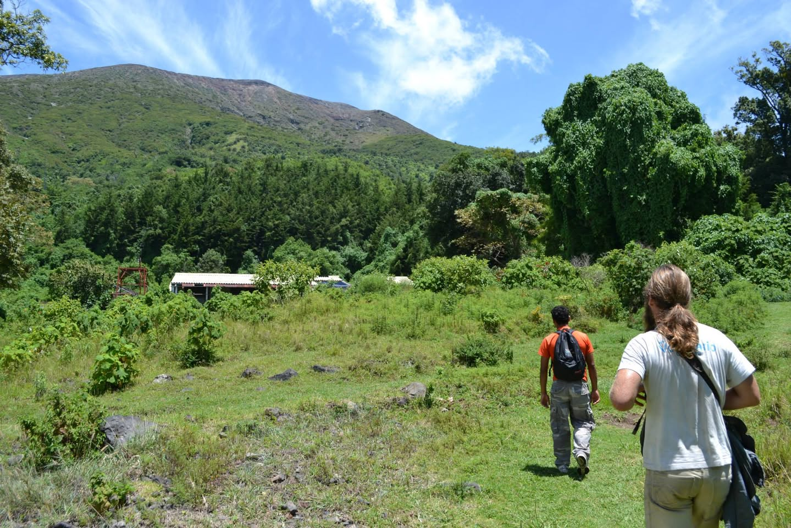
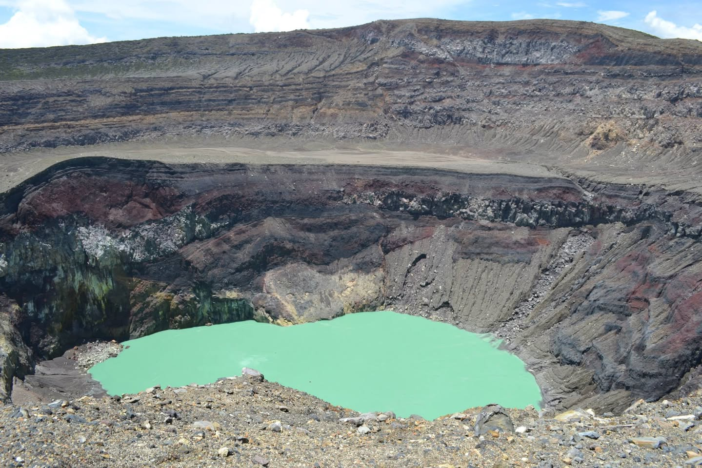
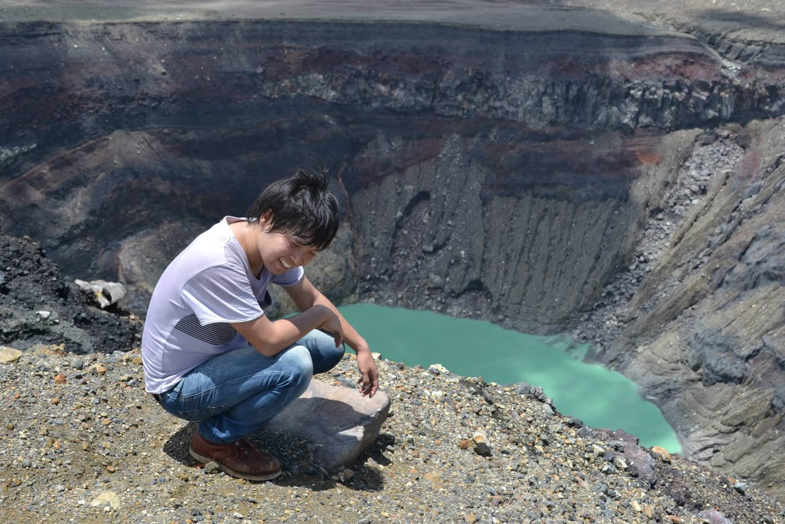
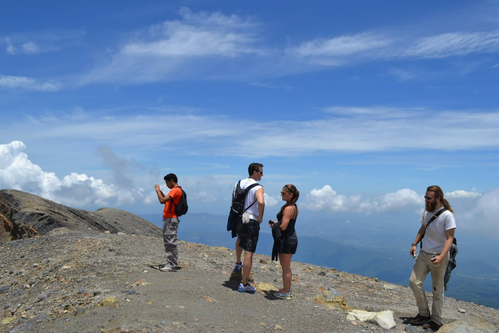

2014年9月、エルサルバドル最高峰のサンタ・アナ火山（Volcán Santa Ana）、標高2381メートル。エルサルバドルに住む友人に連れられて、登ることになった。正直、登山の準備はほとんどしていなかった。
イサルコ火山 — 星の王子さまの山
登山口に向かう途中、別の火山が見えた。イサルコ火山だ。完全な円錐形の黒い山で、雲の中からそびえる姿は一目で印象に残る。
友人が教えてくれた。「サン＝テグジュペリが飛行士だった頃、この山を飛行の目印にしていた。『星の王子さま』のモデルになった山とも言われている」。真偽のほどはわからないが、あの形はたしかに物語の中の絵に出てきそうだった。

警察官が後ろについてくる
登山口でガイドと合流した。「ガイドではないガイドさん」という不思議な立場の人で、正式な資格があるのかどうかよくわからなかった。
そして出発すると、警察官が後ろからついてきた。なぜかと聞くと、「以前、この登山道で旅行者が襲われて亡くなる事件があった。それ以来、警察がエスコートしている」とのことだった。そういう話を聞いてからの登山は、緑の中を歩いていても妙な緊張感がある。

友人たちの歩くペースが速い。自分だけどんどん遅れていく。坂が急になるにつれて息が上がってくる。後ろを振り返ると、警察官が一定の距離を保ちながらついてきている。その姿がなんとも複雑な気持ちにさせた。
「あー、しんどかった。警察官に励まされながら登った」という記憶だけが残っている。
山頂の火口湖
標高2381メートルの山頂に着くと、火口の中にエメラルドグリーンの湖があった。
写真で見たことはあったが、実物は想像よりずっと鮮やかだった。硫黄の匂いが漂う岩だらけの火口縁から見下ろすと、その色が現実のものとは思えなかった。活火山の内側にこれだけ澄んだ色の水が存在することが不思議だった。



エルサルバドルはコーヒーとサルサの国だと思っていた。火山も遺跡も、来るまで知らなかった。知らないまま来て、知らないものを見る。それが旅なんだと思う。